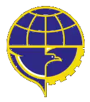

RAKORWIL 2026
Rapat
Koordinasi
Wilayah
Sinergi Transportasi Antarmoda dan
Penurunan Emisi Gas Rumah Kaca
di Kawasan Bandar Udara

Kantor Otoritas Bandar Udara
Wilayah V Makassar
MAKASSAR
SELASA, 20 OKTOBER 2026